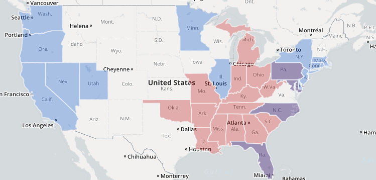

Community Engagement
 One of the goals of the Mapping Broadband Health in America tool is to elicit feedback on the best ways to understand the intersection of broadband, connectivity, and health and to look ahead to potential solutions to any gaps the tool reveals. We recognize that the FCC is only one part of the broadband health ecosystem. The Connect2HealthFCC Task Force welcomes your suggestions and feedback as we continue to develop and refine the tool.
- We particularly seek your input on the data and information contained in the maps, and on ways we can improve the user experience with the maps.
- What other data points would be useful to display?
- What additional resources can be used to gather this data?
- Are there other changes in methodology that would be helpful and informative?
You may ask questions or provide informal feedback by emailing engageC2H@fcc.gov, with “Mapping” in the subject line.
Or, you can file more formal comments or submit additional data for the record via the FCC’s Electronic Comment Filing System, GN Docket 16-91.